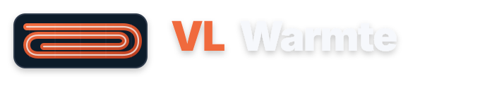
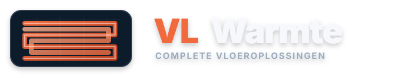

Slakkenhuis / counterflow
Gebaseerd op het meest gelijkmatige legpatroon: heen en retour lopen naast elkaar in een rechthoekige spiraal.
Nieuwe SVG-richtingen vanaf nul: gebaseerd op een vloerverwarming legpatroon, met dezelfde CTA-oranje kleur als de rest van de website.
Gebaseerd op het meest gelijkmatige legpatroon: heen en retour lopen naast elkaar in een rechthoekige spiraal.

Gebaseerd op parallelle banen met ronde bochten. Compacter en duidelijker dan de paperclip-variant.

Gebaseerd op afwisselende aanvoer/retourbanen. Technischer, maar heel herkenbaar als vloerverwarming.